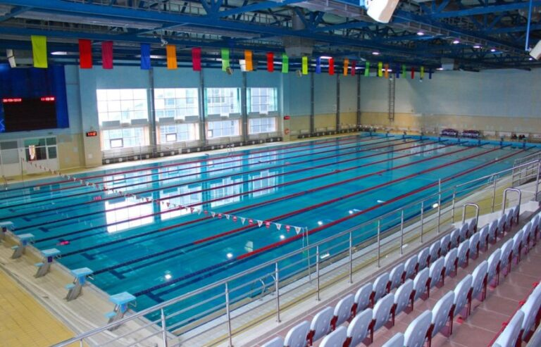

Первая водная арена Гомельщины
Бассейн ЦОР открылся в 2006 году и стал первой водной ареной в Гомельской области с десятью 50-метровыми дорожками и трибунами на 500 зрительских мест. Здесь тренируется спортивный резерв по плаванию, проходят соревнования, а по вечерам дорожки открыты и для всех желающих — оздоровительное плавание доступно на платной основе.
Главная гордость — большая чаша 25 × 50 метров: на ней идут и учебно-тренировочный процесс, и взрослые заплывы, и старты областного уровня. Рядом — малая чаша 6 × 12 метров, предназначенная для самых юных пловцов и семейного плавания: именно с неё начинается путь каждого воспитанника.
Для подготовки спортсменов работают зал общей физической подготовки и зал «сухого плавания», где отрабатывают технику гребка и силу на суше. А после тренировок можно восстановиться в сауне с джакузи.
В отделении плавания ЦОР дети занимаются с 6–7 лет: сначала — группы начальной подготовки и оздоровительные группы, где учат доверять воде, дышать и держаться на поверхности, затем — техническая отработка четырёх стилей и переход в спортивные группы. Набор в оздоровительные группы открытый: берут детей от 6 до 14 лет, как новичков, так и тех, кто уже уверенно плавает.
Помимо плавания Центр олимпийского резерва готовит спортсменов по биатлону, академической гребле, волейболу, гандболу, гребле на байдарках и каноэ, фигурному катанию и хоккею — бассейн в этой системе работает и как база для общефизподготовки других отделений.
Бассейн ЦОР — это 50 метров воды, где соседствуют детский плеск и взрослые рекорды. Утром здесь идут тренировки юных пловцов, днём — школьные оздоровительные группы, вечером — те, кто после рабочего дня выбирает несколько спокойных заплывов вместо спортзала. И это, пожалуй, лучшее описание физкультуры района в одном месте: вода принимает всех.